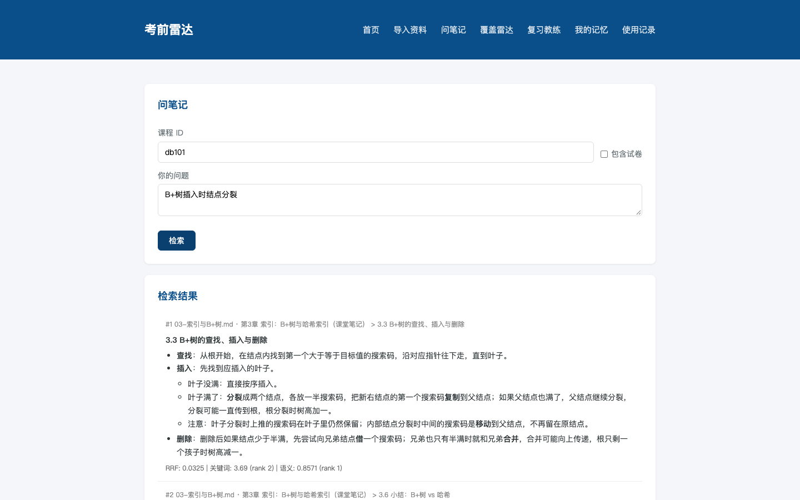
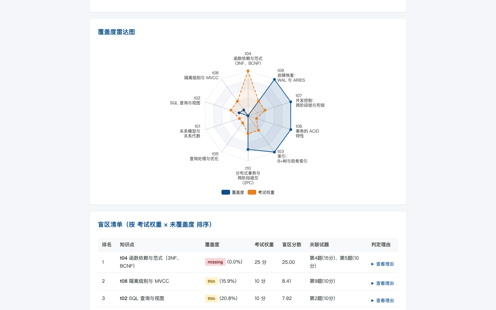
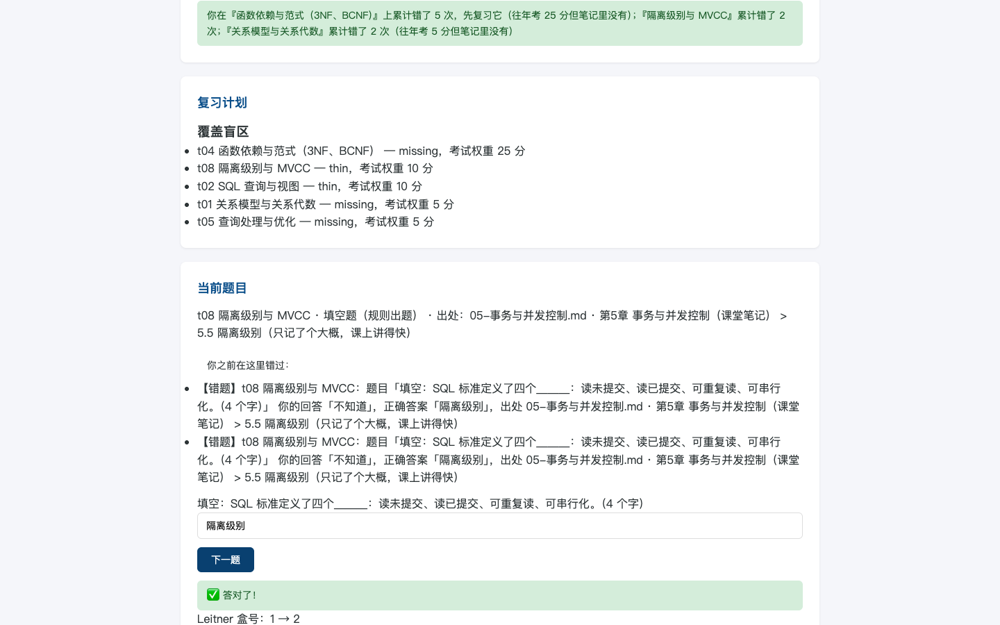
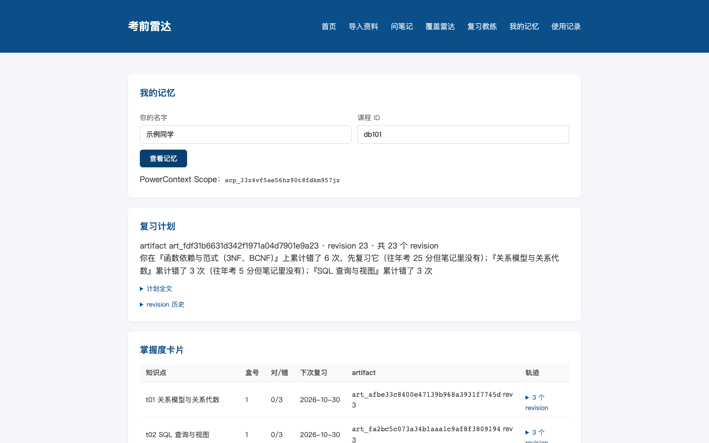
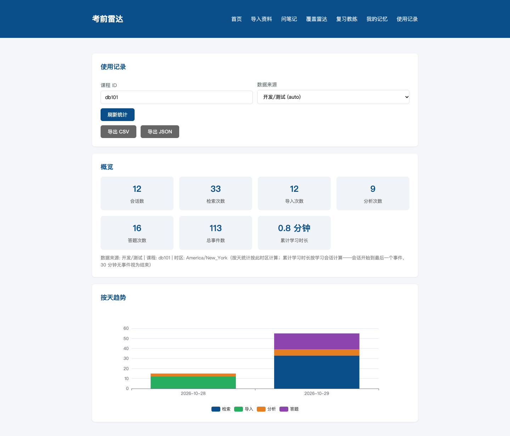

导入资料 + 问笔记
导入 Markdown、纯文本和 PDF 资料（笔记 / 课件 / 往年试卷 / 论文），切块入库后用混合检索问答。
- 向量检索 + IK 全文检索，RRF 融合，中英文都能搜；
- 每条结果带出处：文件 · 第几页 · 标题路径；
- 配置大模型时生成带 [1][2] 引用的回答，未配置时直接展示带出处的原文段落。
大学生期末复习时，三个反复出现的痛点：
课堂笔记（Markdown）、老师的课件（PDF）、往年试卷（PDF）、拓展阅读的论文（中英文 PDF）分散在各处，想找“上次笔记里讲两阶段锁的那段”要翻半天。
老师公布了考试范围，但没人告诉你哪几章自己的笔记根本没记、哪些只记了一两句，而往年真题恰恰常考这些。
刷题工具不知道你上次错在哪，每次都从头来；错题本靠手抄，复习间隔全凭感觉。
本地运行、无模型依赖：配置大模型时体验更好，不配置时全部功能依然完整可用。

导入 Markdown、纯文本和 PDF 资料（笔记 / 课件 / 往年试卷 / 论文），切块入库后用混合检索问答。

粘贴老师给的考试范围，对每个知识点在资料里找证据、做判定。

只从你自己的资料里出题，优先针对薄弱、缺失和到期复习的知识点。

越用越懂你：每次判分都写进长期记忆，下次打开从记忆开始。

真实记录每一次使用，数据可核对。
两个基础设施各管一件事：seekdb 是课程知识库，存资料、做检索；PowerContext 是学习者的记忆，存掌握度、错题和复习计划。两者都在主流程里真实起作用。
| seekdb = 课程知识库 | PowerContext = 学习者的记忆 | |
|---|---|---|
| 存什么 | 资料切块（documents / chunks 表：正文、标题路径、页码、试卷题号与分值、向量）；使用记录（usage_events 表） | 每个学习者 × 课程一个 Scope；掌握度卡片、错题、复习计划、会话小结等原子记忆 |
| 在哪些功能起作用 | 导入资料、问笔记、覆盖雷达、使用记录 | 复习教练、学习者记忆、新会话开场白 |
| 怎么核对 | 检索走 DBMS_HYBRID_SEARCH（向量 + IK 全文，RRF 融合）；用 DBMS_HYBRID_SEARCH.GET_SQL 可以看到实际执行的 SQL，每条检索结果都带出处 |
每次判分产生新的 revision（掌握度变化轨迹）；记忆带标签（如 type-mastery、bootstrap-context）；会话开始 / 进入知识点走 context/bootstrap 和 context/prepare 两个上下文接口 |
数据来自样例课程《数据库系统原理》（示例课程资料包）的真实分析结果导出：对 10 个考试知识点逐个检索判定，往年试卷 11 道题、满分 100 分。点开盲区可以看到支撑判定的证据、出处和关联试题。
覆盖雷达数据暂时不可用（data/sample-coverage.json 缺失或为空）。
盲区 = 考试分值高 × 覆盖度低。下表按盲区分值从大到小排序；点任意一行展开判定理由、最强证据和关联的往年试题。
| 知识点 | 覆盖判定 | 覆盖度 | 往年分值 | 盲区分值 |
|---|
盲区清单数据暂时不可用。
详细步骤见仓库的 README 和 VALIDATION（以部署文档 DEPLOY.md 为准）。
从导入资料到看雷达、做一道题的完整流程演示。
本项目的需求拆解、技术设计、编码和调试由 Qoder CLI（qoderclicn 1.1.80，Qoder CN）完成；产品负责人负责写需求、提供样例数据和接口实测备忘、审阅和验收，不直接写应用代码。下表是每次 Qoder 会话的型号、轮数和 Credits 用量，数据来自仓库的 dev-records/CREDITS.md。
| # | 会话内容 | 模型 | 轮数 | 耗时 | Credits |
|---|---|---|---|---|---|
| 合计（— 条记录） | — | — | |||
完整会话记录（每条模型消息、思考、工具调用）和关键截图见仓库的 dev-records/ 目录。
只展示真实、可核对的使用数据，不拿开发测试数据充数。